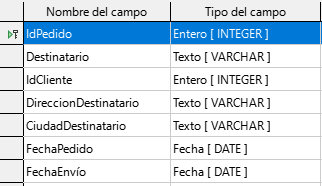

Descripción de la tarea
En esta actividad vas a crear la base de datos que se propone en el estudio del tema de base de datos. La realizarás con el programa Base del paquete ofimático LibreOffice.
Si no lo tienes instalado en tu ordenador, ve a la página oficial de LibreOffice, elige la versión adecuada a tu sistema operativomatica y descárgala. Instálalo y ya puedes empezar a usar una completa suite ofimática de escritorio libre y gratuita.
Entrega de la Tarea
Al final del desarrollo de tu tarea deberás entregar el fichero de base de datos y capturas de pantalla del proceso.
Atención
Es posible que al intentar crear la base de datos, si no tienes instalado el JRE (Java Runtime Environment), se produzca un error como el siguiente. Pero arreglarlo es muy fácil!!
Arreglar el error "necesita un JRE"
Debes instalar Java Runtime Environment (JRE). Para ello visita la siguiente dirección:
https://java.com/es/download/ para Windows.
https://www.java.com/es/download/manual.jsp para otros sistemas operativos
Instalar Java Runtime Environment
Descarga e instala el JRE, ejecútalo.
Reinicia el ordenador
Reinicia el ordenador y podrás ejecutar Base y empezar a crear tu base de datos.
Tarea a realizar
Crea tu base de datos
Una vez arreglado el problema anterior deberás crear la base de datos con la que vamos a trabajar. El siguiente paso será crear las tablas que la componen.
Abre Base y sigue los pasos que se indican:
Nombra tu base de datos con tu nombre y apellidos.
Crea las tablas de la base de datos
Crea las tabla de Pedidos y Transporte con los siguientes campos y establece la clave principal de cada tabla que se indica en las imágenes: IdPedido para la tabla Pedidos e IDTransporte para la tabla Transporte.
¡OJO! Recuerda Guardar cada vez que realices una operación
| Tabla Pedidos | Tabla Transporte |
|
 |
Abre las tablas e introduce tus propios datos (5 registros en cada tabla). Aquí tienes unos ejemplos, pero no los copies, invéntalos tú. Recuerda que las claves primarias no se pueden repetir.
Crea las relaciones
Antes de crear las relaciones debemos añadir el campo, por el que vamos a unir las dos tablas, en la tabla Pedidos.
Edita la tabla Pedido y añade un campo denominado IDTransporte del mismo tipo (Integer) que el campo IDTransporte de la tabla Transporte.
Introduce datos en el nuevo campo IDTransporte de la tabla Pedidos. Con estos datos unimos la información de estas dos tablas.
Y después se crean las relaciones, desde el menú Herramientas>> Relaciones.
En el menú Relaciones hay que indicar cuál es la tabla de origen y cuál la de destino y los campos a relacionar.
No es necesario que los campos de relación tengan el mismo nombre, pero sí que sean del mismo tipo.
Y el resultado será el siguiente:
Introduce datos en el nuevo campo IDTransporte de la tabla pedidos. Con estos datos unimos la información de estas dos tablas
Crea una consulta
Usando el asistente crea una consulta para visualizar los pedidos de Granada o de otra provincia que tú hayas usado en tus datos siguiendo los siguientes pasos:
| Selecciona los campos: | |
| Ordena por los campos que desees | |
| Elige los registros a mostrar | |
| Resultado de la consulta | |
| Guardar la consulta con el nombre "Pedidos de Granada " o de la ciudad que tú elijas. | |
Crea un formulario para introducir los datos
Usa el asistente para crear un formulario para la tabla Transportes de forma que se puedan insertar datos nuevos, pero no se pueda borrar o modificar los existentes. Utiliza el formato que desees.
Realiza una captura de pantalla.
Crea un informe
Usa el asistente para crear un informe con los datos de la consulta creada anteriormente. Puedes usar las etiquetas del diseñador para introducir texto.
Crea una captura de pantalla.
Obra publicada con Licencia Creative Commons Reconocimiento Compartir igual 4.0